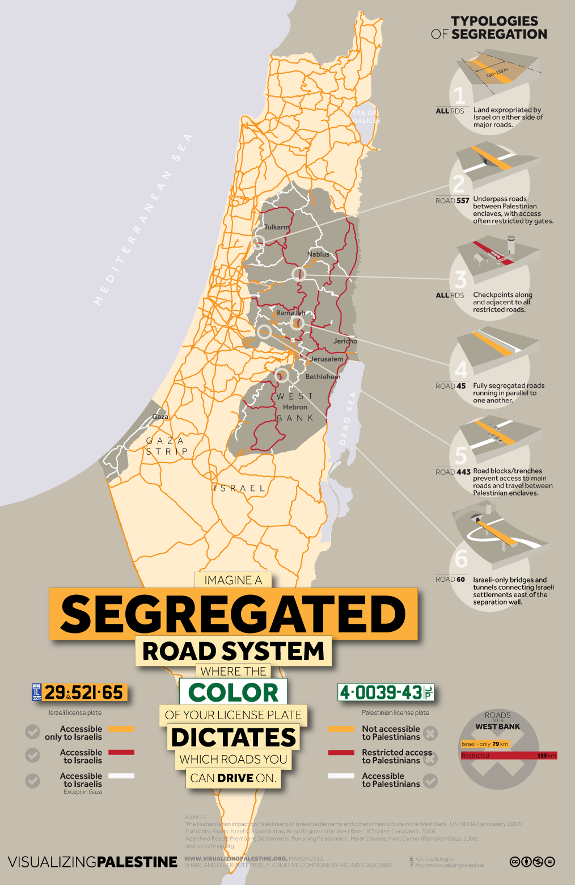
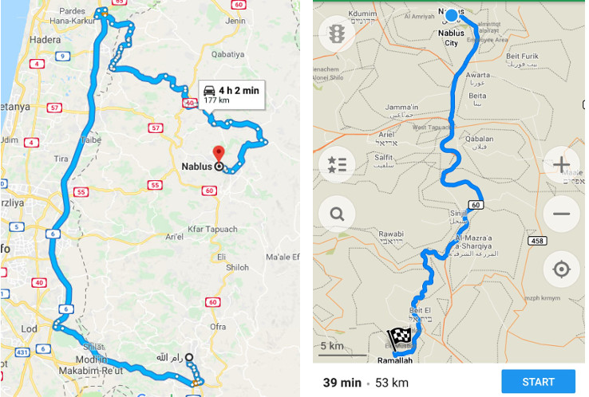
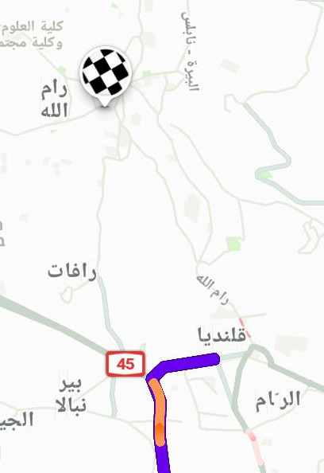
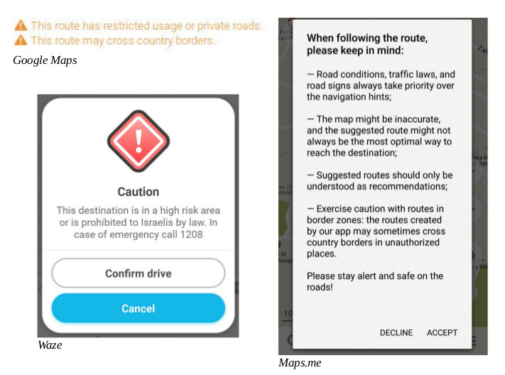

تتفاقم تجزئة الضّفّة الغربيّة بسبب نظام الطرق المقطّعة الذي يحدّ من حركة الفلسطينيّين، فيسمح مثلاً بعبور حاملي الهويّات الزرقاء فقط (مواطنون إسرائيليّون لديهم سيارات بلوحات صفراء) في شارع "معقّم" يمتدّ طوله 79 كيلومترًا، ويمنع الفلسطينيّين سكّان الضّفة الغربيّة (حاملو الهويّات الخضراء) من المرور من هذا الشارع. إن تواجد الفلسطينيّين على هذه الطرق يعتبر غير قانونيّ، وهي طرق تصل عادةً بين المستوطنات. أمّا الطرق المخصّصة لاستخدام الفلسطينيّين فهي عادةً دون المستوى المطلوب أو غير معبّدة أو طرق ترابيّة، وهي طرق مقطوعة عن الشوارع الإسرائيليّة ذات الجدران العالية، ويمكن إغلاقها دون أي سابق إنذار من قبل القوّات الإسرائيليّة. من العواقب التي قد تواجه الفلسطينيين في حال استخدموا الطرق المعدّة للإسرائيليّين فقط: الاعتقال أو التأخير أو التوقيف أو مصادرة السيارات أو حتى الموت. تم تحديد استخدام الفلسطينيين في الضّفّة الغربيّة لشوارع بطول 155 كيلومتر، ويستوجب إصدار تصاريح خاصّة لاستخدام هذه الشوارع، وهذا أمر من الصعب تحقيقه. توفّر منظّمتيّ بتسيلم ومركز العمل التنموي- معًا قوائم تفصّل مواقع وطول هذه الشوارع "المعقّمة"، والشوارع المحظورة بشكل جزئيّ والشوارع الممنوعة من استخدام الفلسطينيّين (بتسيلم 2004؛ معًا 2008).
تتفاقم هذه القيود أيضًا بسبب سوء معاملة الفلسطينيّين في نقاط التفتيش. تظهر الخارطة أعلاه تقييدات الحركة المختلفة التي يتم فرضها على الفلسطينيّين في نقاط التفتيش، إن كان ذلك سيرًا على الأقدام أو بمركبات. غالبًا ما يتم تأخير أو تفتيش السيارات الفلسطينيّة في الشوارع المشتركة للفلسطينيّين والإسرائيليّين، وذلك لسهولة التعرّف عليها بسبب لائحتها الخضراء (بتسيلم 2004؛ معًا 2008). قد يتعرّض الفلسطينيّون من الضّفة الغربيّة لعواقب وخيمة تهدّد حياتهم عندما يحاولون المرور عبر نقاط التفتيش إلى إسرائيل أو المستوطنات الإسرائيليّة التي تقع في الضّفّة الغربيّة، لذلك فإن الحاجة لخرائط دقيقة ولخدمة تخطيط طرق هي حاجة ماسّة. وبالفعل أدّت تقييدات حركة الفلسطينيّين إلى مقتل فلسطينيّين، من سكّان الضّفّة الغربيّة، في نقاط التفتيش بعدما منعتهم السلطات الإسرائيليّة من العبور (بتسيلم 2004)، وإلى مقتل فلسطينيّين، عند مداخل المستوطنات ومحطّات الباص، بعدما أطلق جنود إسرائيليّون النار عليهم بذريعة أنّهم يشكّلون تهديدًا (براون 2014). يوضّح ويقارن هذا القسم بين تطبيقات تخطيط الطرق التابعة لخرائط "جوجل" وWaze وMaps.me، بما في ذلك كيفيّة تسمية هذه التطبيقات لنقاط التفتيش والمستوطنات الإسرائيليّة. يقدّم هذا القسم أيضًا تحليلاً لتخطيط الطرق للطرق الخمسة التالية: (1) من مدينة رام الله في مركز الضّفّة الغربيّة إلى مدينة نابلس في شمال الضّفّة الغربيّة، (2) من رام الله إلى مدينة بيت لحم في جنوب الضّفّة الغربيّة، (3) داخل التجمّعات الرّيفيّة في جنوب جبال الخليل في الضّفّة الغربيّة: من بلدة يطّا وحتّى قرية التواني، (4) من غزّة إلى حيفا داخل إسرائيل، (5) من غزّة إلى رام الله في الضّفّة الغربيّة.
صورة: النظام الإسرائيليّ لفصل الشّوارع في المناطق الفلسطينيّة المحتلّة- Visualizing Palestine، أيّار 2012
بالنسبة للطرق الواقعة داخل الضّفّة الغربيّة، يعطي تطبيق خرائط "جوجل" أولويّة توجيه المستخدمين عبر إسرائيل وليس عبر الضّفّة الغربيّة، حتّى لو أضاف ذلك مسافةً كبيرة للرحلة. عادةً ما يستغرق الوصول من رام الله إلى نابلس عبر السيارة 45 دقيقة، ولكن عند استخدام خرائط "جوجل"، يظهر التطبيق رحلة طويلة تمر عبر إسرائيل وتستغرق مدّة أربع ساعات ونصف السّاعة. بالمقابل، يظهر التطبيق أن أقصر طريق من رام الله إلى بيت لحم يمر عبر القدس، التي يُمنع الفلسطينيّين حاملي هويّات الضّفّة الغربيّة من دخولها. عندما يمر طريق عبر الضّفّة الغربيّة، يظهر تطبيق خرائط "جوجل" تحذيريْن بجانب وصف الطريق: "يشمل هذا الطريق قيود استخدام أو شوارع خاصّة" و"قد يمر هذا الطريق عبر حدود الدولة" كما أنّه لا ينجح في إبراز المستوطنات أو نقاط التفتيش الإسرائيليّة. لا يستطيع تطبيق خرائط "جوجل" أن يحسب الطرق التي تمر عبر تجمّعات ريفيّة فلسطينيّة، أو الطرق إلى ومن غزّة، ويظهر الرسالة التالية: "نأسف، لم نتمكّن من حساب اتّجاهات السياقة/السير من x إلى y". يتيح التطبيق إمكانيّة "إضافة مكان غير مدرج على الخريطة" وأيضًا تحرير المعلومات، ولكن "قد يستغرق ظهور التغيير على الخريطة بعضًا من الوقت" بحيث يجب أن تراجع "جوجل" التحديث أولاً.
في حين أنّ تطبيق maps.me لا يشير إلى المستوطنات، إلا أنّه يشير إلى نقاط التفتيش بشكل خاص وتكتب "نقطة تفتيش" ويضيف إليها أسماءً، على سبيل المثال: "تفتيش حدوديّ للاحتلال الإسرائيليّ"، أو يشير إلى نقطة التفتيش برقم النقطة، مثلاً: "نقطة تفتيش رقم 56". ولكن، يتم تخطيط الطرق عبر نقاط التفتيش من دون إيضاح تقييدات الحركة المفروضة على الفلسطينيّين حاملي الهويّات الخضراء. عند استخدام تطبيق maps.me لأوّل مرة، يظهر تحذير طويل وعام على الشاشة، ويمكن احتساب كل الطرق في الضّفّة الغربيّة ومن غزّة إلى إسرائيل أو إلى الضّفّة الغربيّة. بشكل عام، تقود الطرق المخططة بين المدن الفلسطينيّة في الضّفّة الغربيّة السائق في داخل الضّفّة الغربيّة، ما عدا الطريق بين رام الله وبيت لحم، والتي يتم احتسابها عن طريق القدس. يظهر maps.me في التجمّعات الريفيّة في تلال جنوب الخليل طريق ترابيّ صغير يستخدمه السكّان الفلسطينيّون في تلك المنطقة بدلاً من الطريق السريع الذي يستخدمه المستوطنون. لذلك، يمكن غالبًا استخدام maps.me من قبل فلسطينيّي الضّفّة الغربيّة حاملي الهويّة الخضراء. كذلك، يتيح التطبيق للمستخدمين الذين يسجّلون الدخول إمكانيّة إضافة أو تحرير مواقع بالاستناد إلى خريطة OpenStreet مفتوحة المصدر.
Waze هو تطبيق تم تطويره في إسرائيل (Waze 2014) وقامت "جوجل" بامتلاكه. يعمل التطبيق في إسرائيل وفي منطقة C، ويشمل تحذيرات تتعلّق بازدحام السّير وحوادث الطرق ونقاط رقابة الشرطة في الشوارع. تُعطى التوجيهات في منطقة C حصريًا ولذلك يتوقّف التطبيق عن تزويد التوجيهات عند الدخول إلى المدن الفلسطينيّة الكبيرة. على سبيل المثال، عند الإشارة إلى طريق يؤدّي إلى رام الله الموجودة في منطقة A، تتوقّف التوجيهات بشكل مفاجئ عند الوصول إلى نقطة التفتيش قلنديا. يمكن الحصول على طرق تؤدّي إلى المدن الفلسطينيّة عبر التطبيق عند إيقاف إمكانيّة "تجنّب مناطق المخاطرة العالية". عند البحث عن مواقع فلسطينيّة مثل بيت لحم، تظهر المقترحات الأوّليّة أسماء مواقع مع أسماء مشابهة في داخل إسرائيل، ونجد المدينة الفلسطينيّة بيت لحم في أسفل قائمة النتائج. قبل أن يحتسب طريق ذات "مخاطرة عالية" – أي مناطق فلسطينيّة – يظهر Waze تحذيرًا يشمل رقم هاتف يمكن الاتّصال به في حالة طوارئ، ويطلب التطبيق موافقة المستخدم قبل البدء بتخطيط الطريق. ولكن، لا يمكن تخطيط طريق في المناطق الريفيّة الفلسطينيّة، أو إلى ومن غزّة، فتظهر على الشاشة إشارة خطأ. لدى Waze "مجتمع محرّرو خرائط أونلاين فعّال ويهتم بأن تكون البيانات في منطقتهم محدّثة بقدر الإمكان"، ويتيح الإمكانيّة للمستخدمين الذين يسجّلون الدخول بأن "يحرّروا الخرائط" وأن يضيفوا أماكن وبنى تحتيّة كالشوارع. (Waze (بدون سنة)، دعم Waze، 2018).
صورة: النظام الإسرائيليّ لفصل الشّوارع في المناطق الفلسطينيّة المحتلّة- Visualizing Palestine، أيّار 2012
تصوير شاشة (waze): تخطيط طريق إلى رام الله
لم تُشِر أيّ من تطبيقات تخطيط الطرق الثلاثة التي تم تحليلها إلى المستوطنات على أنّها غير قانونيّة، بموجب بند 49 من اتفاقيّة جنيف الرابعة، وبند 55 من أنظمة لاهاي. Maps.me هي الخدمة الوحيدة التي تشير إلى نقاط التفتيش على خرائطها، ولكنّها لا تأخذ نقاط التفتيش بعين الاعتبار عند تخطيط طرق أو هويّة مستخدمي الملاحة، وتظهر التطبيقات الثلاثة تحذيرًا والفرق بالبعد وتفصيلات أخرى تتعلّق بالحدود ودقّة الطريق. يحذّر تطبيق Waze بشكل خاص عند الدخول إلى مناطق فلسطينيّة كـ"منطقة مخاطرة عالية" ويطلب موافقة المستخدم للبدء في عمليّة تخطيط الطريق.
تفشل التطبيقات الثلاثة بأن تأخذ بالحسبان تقييدات الحركة المفروضة على الفلسطينيين وعواقب هذه القيود على تخطيط الطرق. إن أوضح تجسيد لذلك هو الطريق من بيت لحم إلى رام الله. يتّخذ تطبيق خرائط "جوجل" أسرع طريق، والذي يمرّ مباشرةً عبر القدس، وبذلك يعبر من الضفّة الغربيّة إلى إسرائيل، ومن ثم ينتقل إلى الضفّة الغربيّة مرّة أخرى، وهذا ممكن فقط لمن يحمل الهويّة الزرقاء ولحاملي الجوازات الأجنبيّة، وتعبر الطرق البديلة التي يقترحها تطبيق خرائط "جوجل" داخل إسرائيل أيضًا. يتّخذ تطبيق maps.me طريقًا أطول، متجنّبًا القدس، بإمكان حاملي الهويّات الخضراء استخدامه (والذين بشكل عام لا يُسمح لهم دخول إسرائيل بسياراتهم، ويمكنهم العبور إلى إسرائيل فقط عبر نقاط تفتيش إذا كان بحوزتهم تصريح خاص أصدرته إسرائيل). يجسّد هذا الفيديو القضيّة بشكل واضح، حيث يظهر حامل جواز دولي (لا تسري عليه تقييدات حركة) وفلسطيني حامل هويّة خضراء، يحاولان الوصول إلى نفس النقطة. يستخدم كل من التطبيقات خرائط "جوجل" وWaze نفس النظام للإبلاغ عن أخطاء في الخرائط و/أو القيام بتحرير البيانات واقتراح تحرير وإضافة مناطق على الخرائط، وتنسب معلومات حقوق النشر في الزاوية اليسرى من مركز المساعدة في Waze إلى "جوجل".
لقطة شاشة: تحذيرات كما تظهر في التطبيقات المختلفة
